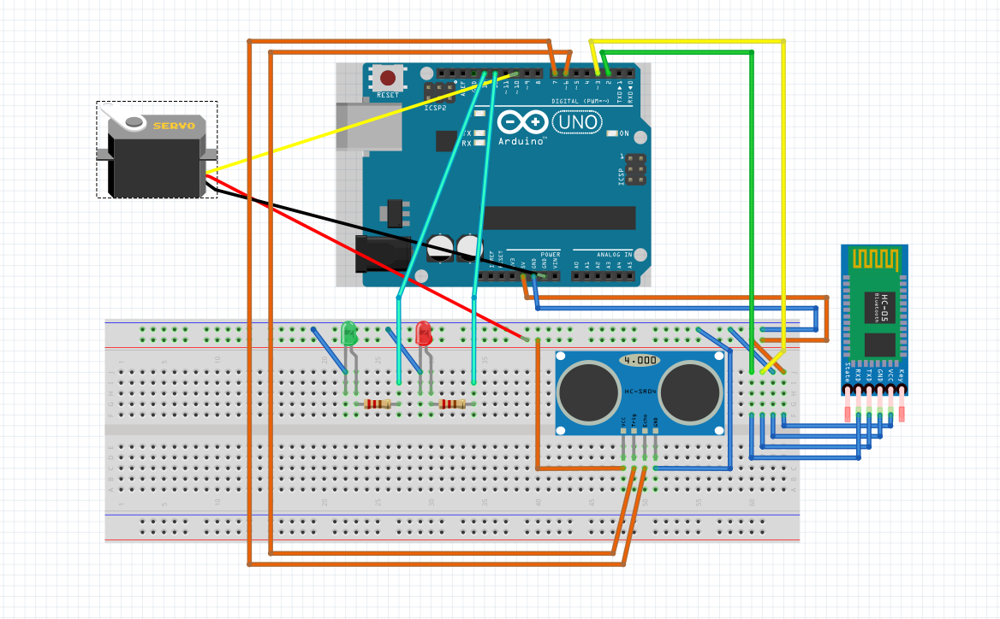

This project presents an implementation of the motion graph technique that uses motion capture data to generate realistic new animations in OpenGL.
Abstract — Brexit has already began to have a significant impact on the job market, especially in the automotive industry. Topic modelling and sentiment analysis provide effective methods of identifying the public opinion towards Brexit, as well as the dominant areas of concern. We then used NER to identify the major geographical areas of interest. Our results showed that the general sentiment towards Brexit is negative and emphasised the significant impact on the automotive industry.
A VR application for visualising and interacting with MRI/CT scans...
A sandbox physics simulator of the solar system developed in Java...
Multi-class logistic regression
Abstract — The logistic regression is a simple, yet powerful, machine learning model used for binary classification. In this project, we will show an implementation of such a model, featuring a multiclass extension following the one-versus-rest approach, and the introduction of a momentum parameter to accelerate the stochastic gradient descent. After the evaluation of its performance, we will find that momentum has the biggest impact in the initial stages of the learning algorithm.
Room monitoring

Three subsystems are involved in this project: